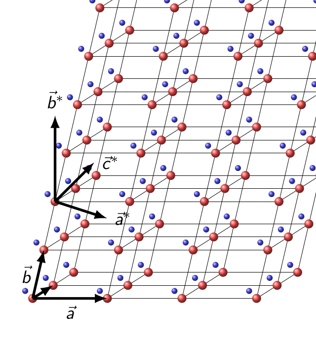

A lattice basis is a set of three vectors whose integer combinations generate all translation points. A crystal structure repeats a motif at those points.
Three related descriptions determine how MTEX computes with the structure: the lattice metric, the crystal frame, and the crystal symmetry.
The lattice metric gives the lengths and angles of the lattice basis. A crystal frame is the Cartesian reference frame fixed to that basis. A symmetry is the point group under which crystal data are invariant. MTEX represents all three together in a crystalSymmetry object, but they are not interchangeable.
This chapter assumes the vector and spherical-plot ideas introduced in Vectors. Notation and Conventions collects the notation, angle units, and reference-frame conventions used throughout MTEX.
plottingConvention.default('y↑→x');One Direction and Its Symmetry Family
A crystal can look the same after more than one operation. For point group m-3m, for example, a ninety-degree rotation about a cube axis leaves the structure indistinguishable. These operations form the crystal symmetry and must be respected whenever crystal directions or orientations are compared.
The indices \([111]\) select one direction relative to the named lattice axes. A Miller object denotes this one indexed vector, not its whole symmetry family.
Symmetry associates \([111]\) with seven other directions. Together the eight are the \(\langle111\rangle\) family for m-3m.
cs = crystalSymmetry('m-3m');
d111 = Miller(1,1,1,cs,'uvw');
family111 = d111.symmetrise('unique')family111 = Miller (m3̅m)
size: 8 × 1
u v w
1 1 1
-1 -1 -1
1 1 -1
-1 -1 1
-1 1 1
1 -1 -1
1 -1 1
-1 1 -1The output lists eight distinct directed members. A calculation must be explicit about whether it uses the indexed direction or this complete family. Opposite members remain different directed vectors unless the calculation explicitly requests antipodal equivalence.
plot(family111,'labeled','grid','backgroundColor','w')
Four blue markers lie in the upper hemisphere and four in the lower. Their labels exhaust the symmetry-equivalent sign combinations of \([111]\).
The 'unique' option matters here. Without it, symmetrise returns one entry per symmetry operation, which is 48 for this point group. The eight distinct directions would therefore appear repeatedly.
Lattice, Crystal Frame, and Plotting Convention
The lattice metric can permit more symmetry than the motif placed in its cell. The declared point group must describe the crystal structure, not merely the shape of the unit cell.
A reference frame is the coordinate system in which data are expressed. The crystal frame fixes how the labelled lattice basis is embedded in Cartesian axes. Two data sources can therefore use the same point group and metric but express their data in differently aligned crystal frames.
A plotting convention states how a reference frame is laid out on screen. Importers may also use that layout as a relation between frames. Changing only the plotting convention moves a drawing; it does not repair a wrong crystal frame or rotate the physical crystal.
Directions and Planes Use Dual Bases
A direction in a crystal and a plane in a crystal are written differently and belong to dual bases. Direct-lattice directions use \([uvw]\), while lattice-plane normals use \((hkl)\) and the reciprocal basis.
In a cubic lattice, the \([111]\) direction happens to be perpendicular to the \((111)\) plane. Cubic geometry is therefore a bad place to learn the difference. In a monoclinic lattice they are not generally perpendicular, and confusing the two silently gives the wrong answer.
In the schematic, red points mark lattice translations and the blue motif repeats with them. Notice that the direct axis \(\vec a\) and reciprocal axis \(\vec a^*\) are not parallel.

Point Groups, Space Groups, and Laue Groups
Three classifications occur throughout crystallography. The operations in a point group share a fixed point and may include rotations, mirrors, and inversion. There are 32 crystallographic point-group types.
A space group also contains translations and operations with translational parts, such as screw rotations and glide reflections. There are 230 space-group types. A Laue group is the point group with inversion added, and there are 11 Laue classes.
Under Friedel's law, conventional diffraction intensities cannot distinguish a reflection from its opposite. Diffraction symmetry is therefore commonly described by the Laue group. Dynamical and resonant diffraction can reveal departures from Friedel's law.
MTEX stores point groups, and accepts a space-group symbol or number by reducing it to the corresponding point group. A crystalSymmetry does not store translational centring, screw or glide components, an atomic motif, or structure factors.
Follow the Chapter
Crystal Symmetries defines point groups in MTEX from Hermann--Mauguin and Schoenflies symbols, with lattice parameters or space-group identifiers, and from crystallographic information files.
Miller Indices introduces direct-lattice directions and reciprocal-lattice plane normals. Lattice Metric and Plane Geometry adds the unit cell, reciprocal basis, the constraints of the seven crystal systems, physical lengths, and interplanar spacings. Operations then develops symmetry orbits, multiplicities, angles, incidence tests, and zone axes. Its 'noSymmetry' option is the one to reach for when an angle looks smaller than the geometry you intended.
Two pages separate conventions that are easily confused. A point group says which operations exist; it does not say how lattice axes are embedded in Cartesian ones. Nor does it say which physical lattice vectors a source calls \(\vec a\), \(\vec b\), and \(\vec c\). The Crystal Reference Frame and Changing Crystal-Axis Settings make those choices explicit. If data imported from two sources disagree by a rotation that looks like nothing physical, a crystal-frame or axis-setting mismatch is almost always why.
Crystal Shapes and Advanced Crystal Shapes construct idealized crystal habits. MTEX also uses these polyhedra as orientation glyphs. Rotating such a glyph is the most direct way to see what an orientation means: how a crystal is placed in the specimen.
Constructing a shape requires only the Miller-index ideas introduced in this chapter. The examples that place shapes as orientation glyphs assume Orientations, which follows this chapter.
Fundamental Sector is the counterpart of the opening figure. Since symmetry makes many directions equivalent, one patch of the sphere can hold a representative of every distinct family. An inverse pole figure is drawn on that patch.
Quasi Symmetries covers finite point symmetries that no periodic lattice can have. It does not model quasiperiodic translations or higher-dimensional indexing.
How Crystal Geometry Connects to MTEX
An orientation maps a crystal frame into a specimen frame. Directions without a crystal attached are Vectors. Physical properties that depend on crystal direction are represented by Tensors.
Geometry used in deformation is developed in Slip Systems and Dislocation Systems. Twin relationships are treated in Twinning, and geometry connecting two phases begins with Parent-Child Variants.
References
- Th. Hahn, H. Klapper, U. Müller, and M. I. Aroyo, Point groups and crystal classes, International Tables for Crystallography A, ch. 3.2, 2016, defines the point-group classification and notation used here.
- B. Souvignier, A general introduction to space groups, International Tables for Crystallography A, ch. 1.3, 2016, relates lattices, metrics, point groups, space groups, crystal systems, and Bravais types.
- C. Hammond, The Basics of Crystallography and Diffraction, 4th ed., Oxford University Press, 2015, introduces lattices, reciprocal space, symmetry, and diffraction.
- A. Morawiec, Orientations and Rotations: Computations in Crystallographic Textures, Springer, 2004, develops symmetry reduction for directions and orientations in texture analysis.
- The International Union of Crystallography, Friedel's law, states the usual diffraction equivalence and its resonant-scattering exception. R. Beanland et al., Digital electron diffraction - seeing the whole picture, Acta Crystallographica A 69, 427--434, 2013, discusses its breakdown under dynamical electron diffraction.
Next
Begin with Crystal Symmetries, then follow the chapter in the order above. After crystal geometry, Orientations places the crystal in a specimen.
Citing this page.
This page is part of the documentation of
MTEX, a free and open
source MATLAB toolbox for analyzing and modeling crystallographic textures.
It was written by The MTEX Developers and is published at
https://mtex-playground.github.io/CrystalGeometry.html.
If you use MTEX, or reuse text or figures from this page, in your research,
please cite
F. Bachmann, R. Hielscher, H. Schaeben: Texture Analysis with MTEX - Free and Open Source Software Toolbox, Solid State Phenomena 160 (2010), 63-68. 10.4028/www.scientific.net/SSP.160.63
BibTeX
@article{bachmann2010mtex,
author = {F. Bachmann and R. Hielscher and H. Schaeben},
title = {Texture Analysis with MTEX - Free and Open Source Software Toolbox},
journal = {Solid State Phenomena},
volume = {160},
pages = {63-68},
year = {2010},
doi = {10.4028/www.scientific.net/SSP.160.63},
url = {https://doi.org/10.4028/www.scientific.net/SSP.160.63}
}Other papers describing specific MTEX methods are listed under Publications — please cite the one that best fits your application. The MTEX source code is licensed under the GNU General Public License v2.0; the text and figures of this documentation are licensed under CC BY 4.0, which permits reuse — including by automated systems — provided The MTEX Developers and this page are credited.